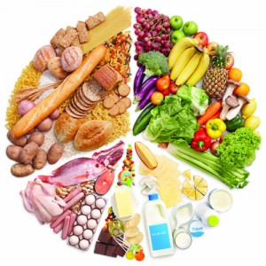
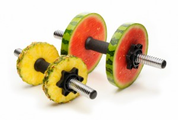
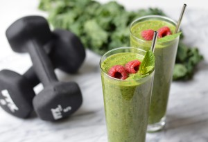

If you want to start physical training, especially in a gym, you have to know what the desired results are based on. Any results, no matter how ambitious they are depend on three main aspects of your life. The training part, also known as the catabolic phase, the resting part, known as the anabolic phase and the most important of them all, the nutrition.
Nutrition plays the most important role in this 3 segment system because you can not have a proper functioning of either the training part or the resting part. Your body will require a certain fuel in order to train and recover, and this fuel comes from the well known macronutrients, or macros like proteins, carbohydrates, fats and of course minerals and vitamins.
Professional fitness athletes use scales and count the macros in every meal in order to keep the perfect balance of ingredients in their meals. This kind of a meal plan might get really tricky if you are in an early stage of your training. You can get your head mixed up in macros lists of all the food on your plate. To get a basic idea of what your daily meals should look like you need to decide what kind of training you will approach because the required nutrients might be different in different training programs.
I will give you an example of a typical weight lifting program. The program will consist in four exercises per muscle group and four or five sets for each exercise. The amount of weight increases progressively until the third set and then decreases. This kind of training is the most basic and covers a little bit of strength training with a little bit of bodybuilding training and this is why it is the most recommended for beginners.
For a program like this you will need to pay attention at all of the macros but also the administration throughout the day. In order to increase the muscle size you will need to have between five and seven meals per day, this is not a joke, you will be burning a lot of calories compared to the usual everyday chords. These meals should be served at equal time intervals during the day but their consistency will have to differ.
The body will require more carbohydrates in the morning, because the carbohydrates will provide the energy for the body to function properly during the day. The most recommended sources of carbs would be whole grain cereals or whole grain cereal bread that can be served with anything from a rich butter with some slices of meat in case of bread or milk with a little bit of cream in case of whole grain cereals. The whole grains are such a good solution due to the one well known property; they release the energy throughout the day and not all at once like the simple sugars. A good protein source in the morning can be whole milk or one or two eggs. Eggs are very controversial due to the cholesterol content in the yoghurt. Cholesterol can be harmful for a non-active person and consumed in high quantities but in the case of a weight lifting program they are really helpful because they contribute to the natural increase of testosterone levels along with zinc, magnesium and branch-chained-amino-acids. If you wish to stay away from it ,however, avoid the yolks.
Somewhere around ten or eleven it is indicated that the meal should be lighter but rich in some omega 3 and omega 6 fats. Those fats are healthy fats and actually manage to help and improv e the proper functioning of the heart. You can get those kind of fats from walnuts, avocado, mango, soy beans or salmon.
The third meal of the day should get you a carb load up because we will assume that this is the pre-workout meal. You have a green light to a meal rich in carbohydrates and do not forget the other macros, a little bit of fat plus some proteins. The ratio should be around 3:2:4(proteins:fats: carbohydrates). The fats can be found in cream, mayo, butter or simply within the protein source. This carb load up will provide the required energy during the training but you have to be sure to give it all during those sets or the system will not work properly and the results may appear different than expected.
The post workout meal will have to consist in easily absorbed protein what you will find in non-industrially-processed foods like chicken breast, salmon, or even in dairy, because many dairy products are very rich in proteins and amino-acids. The amino-acids are micro nutrients like leucine, isoleucine, valine and may others that help the muscular system to recover and work perfectly with the proteins in growing the muscle tissue bigger and stronger. Bananas are recommended for an even lighter recovery due to the simple sugars and Potasium content.
The fifth meal should be light in carbs and rich in slow absorption proteins like casein. Casein is found in milk and can also be found in concentrated forms as dietary supplements. Those proteins will work throughout the night and heal the muscles further so that in the morning you will feel ready for a brand new day and a brand new training session. The most important things to remember are the main functions of the macros, the proper administration of the macros according to the bodys needs and that the best functioning products are the ones that are closer to the raw form not highly industrially-processed-foods.
Always remember that training, rest and nutrition work as a system. And a system does not work if any of its components is faulty.